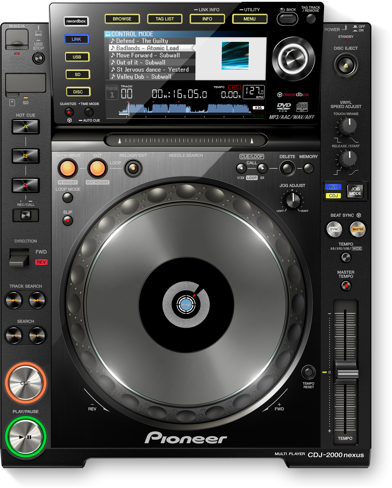
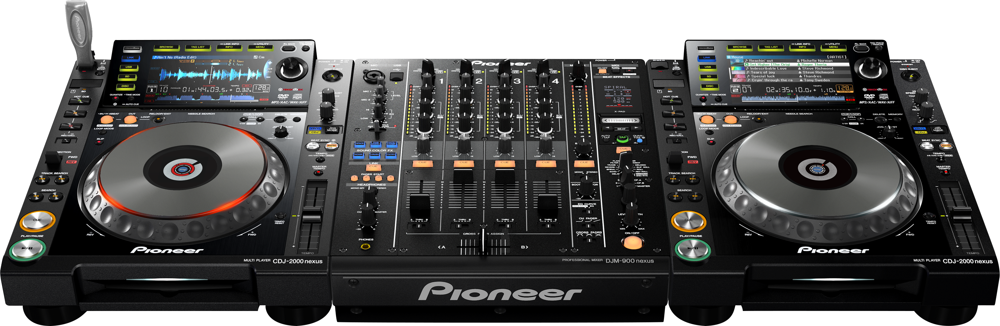
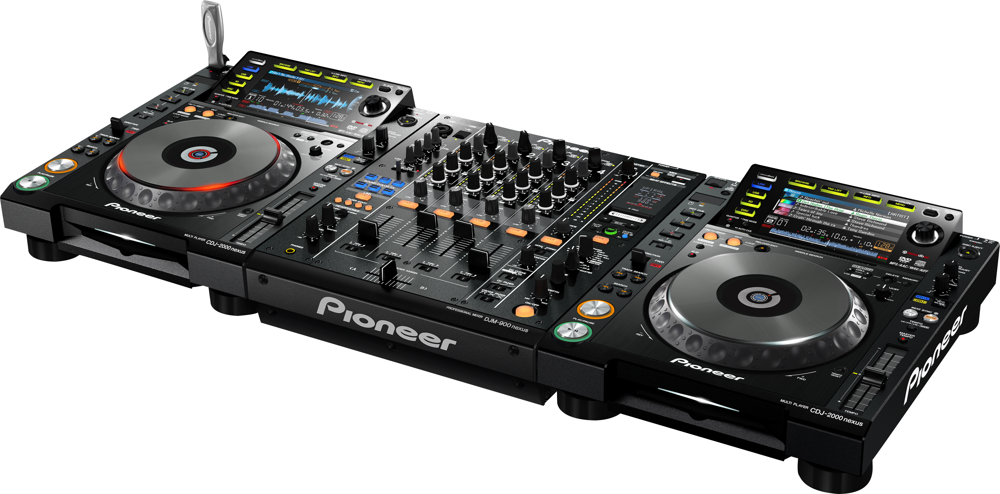
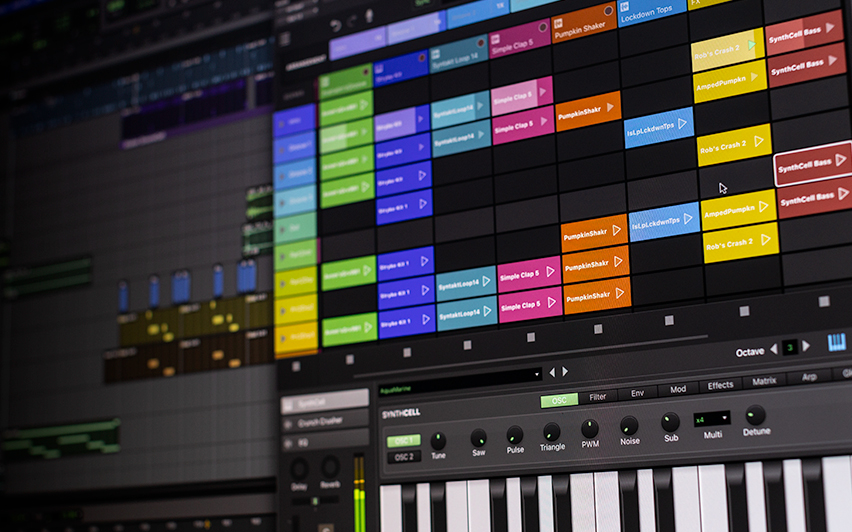
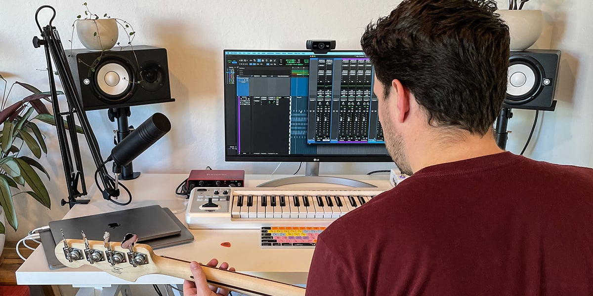
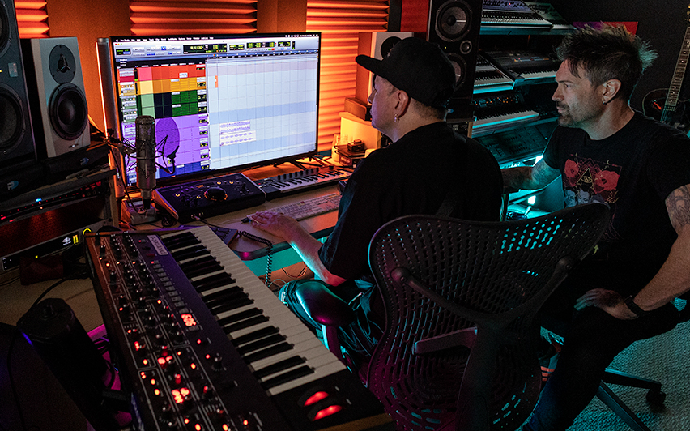
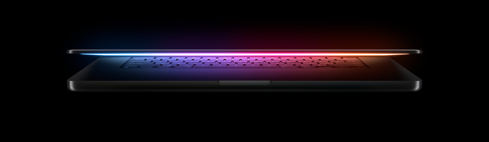
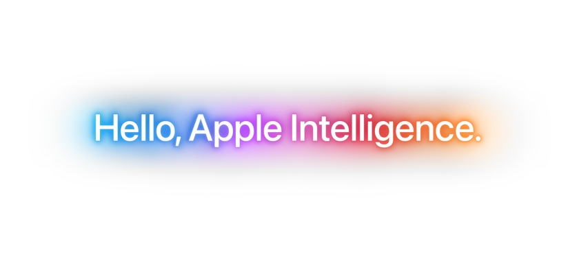
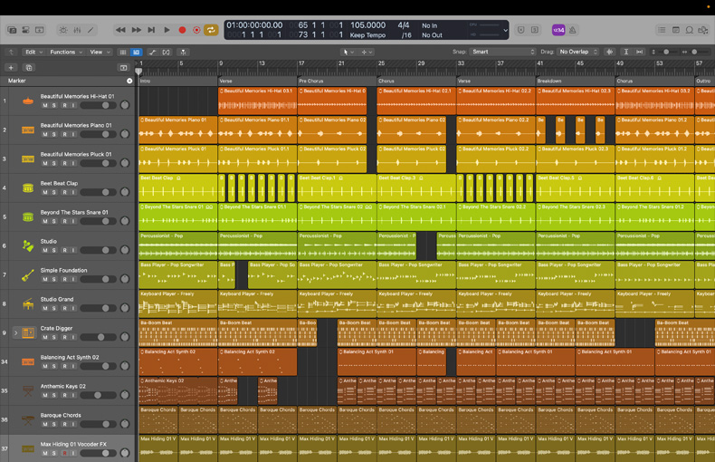
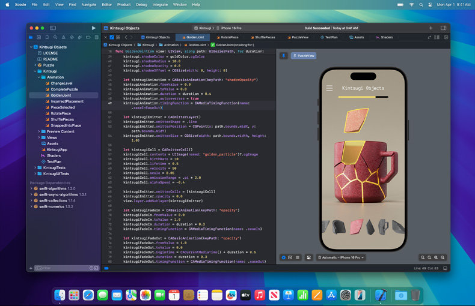

Conversation
Ideas exchange News review

Click image for more
 Ideas and News: EQUIPMENT
Ideas and News: EQUIPMENT

Pioneer CDJ-2000NXS Pro-grade digital DJ deck (black)
Pure performance - Meet the next generation multi-player that opens doors to performances beyond your wildest dreams. The highly evolved CDJ-2000NXS includes advanced features, including 4-deck Beat Sync, Slip Mode and Hot Cue Auto Load.
Use the included rekordbox software or download the rekordbox™ app to prepare mind-blowing sets, or use the HID support to perform with other DJ software without a control disk.  Key features:
Wi-Fi Music - Wirelessly connect* to rekordbox to play your music from your PC/Mac, smartphone or tablet. * You'll need a wired connection to a wireless LAN router (router not included).
Be prepared - Fully compatible with our free rekordbox™ music management software to help you manage your music, prepare tracks and deliver a smooth performance
Advanced connectivity - With Pro DJ Link you can connect multiple players, turntables or laptops via LAN connection and share a single source. Combine this with rekordbox to access pre-prepared loops and cues, sync the beat with the master deck, and access a host of advanced pro-DJ features.
Slip Mode - Keep tracks playing muted during live edits such as loop, scratch or reverse. Release the jog wheel and the track comes back at exactly the right place.
Beat perfect - Quantize snaps cues and loops to the rekordbox beat grid for a reliable performance every time.
Enhanced track info - The large, full-colour LCD screen shows all the info you need, including Wave Zoom, beat countdown, phase meter, key analysis indicator and more.

My Settings - Take your preferred settings with you wherever you play. Save your settings and tracks to USB, SD card, smartphone or tablet, connect to the hardware, and your settings load instantly along with your tracks.
Always in tune - Master Tempo lets you adjust a track’s tempo without affecting its pitch, keeping it more faithful to the original.
Professional Sound - Pro-quality audio circuitry comes as standard, with a built-in 24-bit/48 kHz soundcard and new IEC connection for a powerful sound even at club volumes.
USB playback - It still plays your MP3, AAC, WAV and AIFF files stored on USB devices.
rekordbox dj - You can use this product to control rekordbox dj software. rekordbox dj is a rekordbox Plus Pack that unleashes performance features including Hot Cues, Sampler, Slicer, Sound Colour FX, Beat FX, Beat Jump and Pad FX. Simply buy rekordbox dj, activate your licence key, and start DJing.
TRAKTOR PRO 3 - This unit supports USB-HID control of Native Instruments’ TRAKTOR PRO 3 DJ software, so you don't need a control disk.
Serato DJ Pro & Scratch Live - This unit supports USB-HID control of Serato Audio Research's Serato DJ Pro and Scratch Live DJ software without using a control disk.
MIDI controller - This device is fully MIDI assignable via USB. Send control information to external devices and use the unit as a MIDI controller.
Active Loop - Use rekordbox to set automatic loops at the end of your tracks so you never get caught unprepared again.
Ideas and News: MUSIC
Deep Inspiration Show Records presents to you the Global Essence Sampler Part 2; created and curated with purpose, these 6 fine delicacies nourish the mind and soul- on the A side we have Barce (Spain) featuring Roger Versey, Dan Piu (Zurich) and Zarenzeit (Valencia), providing a tour de force of style from blissfully jazzy & vocal Detroit House guides to paradise class deep vibes where late Nite Mediterranean meets Chicago auras arise.
Melchior Sultana (Malta) introduces the Bside of the ride with instant club magic, remixing A1 in his own elegant & Profound way, followed by Dan Piu traversing the mind and ears through introspective Detroit Techno with soul permeating atmosphere, leading to the conclusion of this tour de force as He and Roger Versey (Ozarks,Arkansas) arrive as Passport bringing an eclectic collage of arcade funk sensibilities and warm analogue House to the occasion for the deeper persuasion. They say there is no genre, just the essence…Welcome and enjoy, the Global Essence Sampler Part 2. Mastered with passion by maestro Sven Weisemann.
released May 3, 2024. Mastered with passion by the maestro Sven Weisemann. Artwork by Khakhu Designs. A&R by Jazzman & Konstantin Olias.
Ideas and News: EVENTS
A2H ALL BLACK ANNUAL 2025. Experience the ultimate blend of house music and entertainment at the A2H ALL BLACK ANNUAL 2025 event!
Vosloorus Stadium - Moagi Road, Vosloorus, Gauteng, South Africa
January 25, 2025. 11:00 AM onwards

Prepare to dance the night away and immerse yourself in a world of house music, rhythm, and excitement!

Get your A2H ALL BLACK TICKET now and secure your spot at the most anticipated event of the year!

Ideas and News: GEAR
Pro Tools
END-TO-END MUSIC PRODUCTION SOFTWARE - Pro Tools makes music creation fast and fluid, providing a complete set of tools to create, record, edit, and mix audio. Get inspired and start making music with a massive collection of plugins, instruments, and sounds. Tackle your most ambitious visions with proven features that power you through the most demanding projects.
Ultimate software for music creation - From idea to final mix, Pro Tools offers seamless end-to-end audio production that covers every stage of the creative process. Start with non-linear Sketches to play with loops, MIDI, and recordings, and then move to the timeline to refine your arrangements using world-class editing and mixing tools.
A common language across audio - Trusted by top professionals and aspiring artists alike, Pro Tools is used on almost every top music release, movie, and TV show. And because the Pro Tools session format is the industry’s universal language, you can take your project to any producer or studio around the world.
Stay inspired with new features, plugins, and sounds - Beyond the comprehensive assortment of included plugins, instruments, and sounds, your Pro Tools subscription/license also delivers quarterly feature updates, new plugins, and regular content updates with Inner Circle rewards and Sonic Drop to keep you inspired.

with pro tools you can
Get creative - Spark ideas with a massive music software collection of plugins, loops, and samples. No matter what type of music you create, you’ll find tons of incredible sounds to explore and tweak.
Invite ideas to happen - Trigger samples and loops, record audio, and capture MIDI performances with the new Sketch window and iPad app to quickly work up ideas. Drag-and-drop clips and experiment with arrangements to create something you love.
Play virtually any instrument - Have thousands of instrument sounds at your fingertips with a collection of Native Instruments Kontakt 8 instruments, plus GrooveCell, SynthCell, Boom, Mini Grand, Xpand, and more included. Even connect your favorite electronic instruments and music apps through Ableton Link.
Make music with MIDI - Build up songs quickly and create more realistic-sounding tracks with easy-to-use MIDI tools—including new MIDI effect plugin support. Add loops that auto-conform to your session tempo. And freely create and experiment without stopping playback.
Record high-quality audio - Seamless punch and loop recording. Automated playlist tracking. All in pristine 32-bit floating/192 kHz audio resolution. With Pro Tools, you can capture performances that sound like a hit record from the start.
Get seamless hardware integration - Use any audio interface that meets your needs to record into Pro Tools. Or add an Avid audio interface or system and you can record through plugins with near-zero latency and get guaranteed performance.
Capture inspired performances - Ever have that moment where you play something amazing but didn’t hit record? With Retrospective MIDI Record, you can bring in those MIDI improvisations retroactively in your DAW to recoup that spontaneity.
Create the perfect take - Experience the easiest audio and MIDI comping workflows for creating flawless performances quickly. You can even cycle through different playlist takes to hear what works best and create something truly inspired.

Easily edit audio and MIDI - When it comes to manipulating tracks in Pro Tools, there’s no right or wrong way. Shape, fix, chop, cut, and tweak audio and MIDI the way you want in a creative DAW that gives you limitless flexibility and freedom to play. And new ARA 2 integration delivers faster and more efficient workflows than ever.
Fine-tune MIDI performances - Quantize notes. Adjust note durations. Transpose recordings. Add dynamics by varying note velocities. Rearrange parts with Folder Tracks. And add more humanistic soul using MIDI Real-Time Properties and effect plugins.
Tweak audio timing and pitch - Easily fix timing, beat match audio, and correct notes with Elastic Audio. Or with Melodyne, RePitch, and Revoice Pro now integrated directly into Pro Tools via ARA 2, you can quickly manipulate pitch and time in real time—without roundtripping audio.
Turn audio to MIDI and vice-versa - Drag an audio sample to a MIDI track or convert an audio track to MIDI, and you can change the instrument, switch out samples, and edit notes. Or drag a MIDI clip to an audio track for more creative editing possibilities.

Mix and master audio with powerful plugins - Get the classic sounds of legendary analog gear—from compressors and EQs to unique effects—with over 120 plugins to fine-tune tracks. Plus, get regular new Sonic Drop content and $3,000+ of additional plugins, sounds, and more with the Inner Circle.
Take hands-on control of your mix - Only Avid control surfaces—from the free Avid Control app to the modular S6—provide the unparalleled DAW integration needed to access tracks, plugins, sends, and more from the surface, speeding up editing and mixing.
Mix Dolby Atmos® music - Give your fans a whole new way to experience your music. Get the capabilities to mix surround and immersive sound—including the new integrated Dolby Atmos Renderer—with Pro Tools Studio and Ultimate.
Distribute your music - Stream your music with AvidPlay on Apple Music, Spotify, TIDAL, Deezer, TikTok, Amazon Music, and many other top streaming outlets. Grow your fanbase and keep 100% of your rights and earnings.

Ideas and News: TECH
75" Class Samsung Neo QLED 8K QN900D
Our most advanced AI powered 8K processor - NQ8 AI Gen3 Processor: Samsung's most advanced AI powered 8K processor creates our best overall 8K experience. Our 8K AI Upscaling Pro technology powered by 512 AI neural networks transforms content up to an 8K resolution. Our NQ8 AI Gen3 Processor optimizes both picture and sound to deliver an 8K experience whether you are streaming OTT services, playing your favorite video games, or watching live sports.

Upscale content into an 8K experience with 512 AI neural networks - 8K AI Upscaling Pro: Our 8K AI¹ Upscaling Pro technology powered by 512 AI neural networks transforms content up to an 8K resolution. Our most advanced NQ8 AI Gen3 Processor enables the sharpest and smoothest picture quality of any Samsung TV.
With all-new superpowers, Siri will be able to assist you like never before.
An experience without any boundaries - Infinity Air Design: See more of the screen and less of the borders with an almost-invisible profile. The image reaches all edges of your TV, giving you a more expansive view for all your movies, shows and content.
Access Free Channels with Samsung TV Plus and more - Endless Free Content: Access 2,700+ free channels including Samsung TV Plus premium channels. Enjoy news, sports, movies, entertainment, music, kids’ shows and more. With new content continuously added, there’s always more to explore.

Transform content to 8K - Neo Quantum HDR 8K Pro: Take in our best 8K quality picture with a huge range of contrast and color. Brighter brights, darker darks bring you an unbelievable picture so clear, you can see every pixel.
Eliminate motion blur with AI. - AI Motion Enhancer Pro: See fast-moving objects with exceptional clarity with AI technology that detects the type of ball used in various sports and smooths its motion frame-by-frame, minimizing motion stuttering, distortion and blurring.
Our best TV sound powered by AI technology - Dolby Atmos™ and Object Tracking Sound Pro: Don't just hear the action—feel it—with our best TV audio powered by AI technology and built-in Dolby Atmos® sound. Dramatic 3D audio fills the room as AI Sound tracks the action on screen with pinpoint accuracy, so you can keep up with every piece of dialogue or background noise.
A new level of depth in every image with AI technology. - Real Depth Enhancer Pro: AI technology pinpoints where you should focus and brings the object into the foreground, enhancing the feeling of 3D depth. With an upgraded, AI-based deep learning, experience depth and dimension on screen just like you do in real life.
Bring out hidden details - Quantum Matrix Pro with Mini LEDS: Discover details you’ve been missing—even in dark and light scenes. It has 1.5x more lighting zones than normal Quantum Matrix technology for even greater detail.
Extremely clear motion - Motion Xcelerator 240Hz³ : Stream your content with amazingly smooth motion and virtually no lag or blur. Get uninterrupted action with crisp visuals rendered at blazing-fast speeds up to 240 frames per second for any content.³
Content converted to HDR-like quality - Auto HDR Remastering: Elevate your viewing experience with our best 4K color and contrast. AI-based algorithms help create brighter highlights and details.⁴
Escape the hassle of pre-game setup - AI Auto Game Mode: AI technology recognizes your game titles and genres and automatically optimizes your TV settings so you can spend less time setting up and more time playing.⁶
Help save energy with AI - AI Energy Mode: Sensors and the TV's processor work together to analyze on-screen content and ambient lighting to automatically adjust your picture settings to reduce energy usage.⁷
Clear dialogue powered by AI technology - Active Voice Amplifier Pro: Hear dialogue clearly with AI technology that distinguishes and amplifies voices over background noises and music tracks. Cut through the commotion so you don't miss a word, even in loud and distracting environments.
Automatically adjusted AI-powered audio - Adaptive Sound Pro: Adaptive Sound Pro uses AI to optimize your audio based on both the setup of your room and the content on screen, resulting in impressively clear, balanced sound from your Samsung AI TV.

Ideas and News: FASHION
Dior Combat Ankle Boot
R23,400.00 ZAR

Description:
Black Polished Calfskin and Dior Oblique JacquardThe Dior Combat ankle boot presents a hybrid, modern and athletic silhouette. The black polished calfskin style is embellished with Dior Oblique jacquard inserts on the sides and tongue. The shoe features laces and a technical zip closure, while the lightweight hybrid sole accentuates its couture appeal. Enhanced by the Dior signature on the side and a padded collar for added comfort, the shoe will add a contemporary touch to all of the season's looks.

Contrasting Dior signature on the side
High upper with padded collar
Lace-up closure with Dior technical zip
EVA hybrid outsole with engraved Dior Oblique motif
Calfskin lining
Welded construction
Dust bag included
Made in Italy

Weight: approximately 460 g / 16 ounces
The style fits true to size, we recommend ordering your normal shoe size

Ideas and News: AUTOMOBIL

Mercedes-Benz V-Class
37.2 - 39.2 mpg (Combined fuel consumption.)
163 – 237bhp. Up to 8 seats. 1,030 – 5,010 litres
(Load compartment capacity.)
Your space vehicle. Enjoy luxurious, unparalleled amounts of space. As comfortable as a saloon – with up to 8 seats.
EASY PACK Package – Electr. sliding door/Tailgate - This package provides you with active support when opening and closing the sliding doors and tailgate. At the touch of a button, the respective door or tailgate opens or closes electrically. This makes loading and unloading as well as entry and exit easier, even when your hands are full.
MULTIBEAM LED headlamps with High Beam Assist PLUS - Benefit from excellent visibility - whether on motorways, country roads or in city traffic. The adaptive MULTIBEAM LED headlamps adapt to the current traffic situation with the help of individually controllable LEDs, and illuminate the road effectively thanks to intelligent light functions.
Multifunction steering wheel - The ergonomically shaped multifunction steering wheel combines innovative operating comfort with attractive design. The touch-control panels in the steering wheel spokes allow you to operate the most important vehicle functions, such as navigation and infotainment, without having to take your hands off the steering wheel.
MBUX multimedia system with 12.3-inch touchscreen - With MBUX (Mercedes-Benz User Experience), you get an intelligent and expandable multimedia system. Its various interfaces, high-resolution touchscreen and instrument display offer numerous communication and infotainment functions.
MBUX augmented reality navigation - Gain a better overview even in complex traffic situations. MBUX augmented reality navigation connects the virtual world with the real world and combines live images with graphic navigation and traffic information. This will help you to find your way around and reach your destination feeling relaxed.
Ambient lighting in the cockpit with 64 colours - Illuminate the cockpit of your vehicle according to your own wishes. The ambient lighting with a total of 64 colours offers you almost unlimited possibilities to match your current mood. Different light sources create fascinating colour themes and increase well-being.
Widescreen cockpit - High ease of use meets fascinating design. With the Widescreen Cockpit, the instrument display and media display merge into a single visual unit under a continuous glass surface. Thanks to touchscreen technology and intelligent menu navigation, you will quickly appreciate the intuitive operation.

Some of the model features, optional extras and colours shown may not be available, or may only be available in a different specification, or at a different price.

Ideas and News: GADGET
Apple MacBook Pro




MacBook Pro features the most advanced lineup of chips ever built for a pro laptop. Phenomenal single- and multithreaded CPU performance, faster unified memory, enhanced machine learning accelerators — the M4 family of chips gives you the kind of speed and capability you’ve never thought possible. And the powerful Neural Engine makes AI tasks like image upscaling and video caption creation as well as on-device Apple Intelligence features fly.
Next-level graphics performance. Game on.
Run graphics-intensive workflows with a responsiveness that keeps up with your imagination. The M4 family of chips features a GPU with a second-generation hardware-accelerated ray tracing engine that renders images faster, so gaming feels more immersive and realistic than ever. And Dynamic Caching optimizes fast on-chip memory to dramatically increase average GPU utilization — driving a huge performance boost for the most demanding pro apps and games.
Apple Intelligence. Genius at work.
Apple Intelligence is the personal intelligence system that helps you write, express yourself, and get things done effortlessly. With groundbreaking privacy protections, it gives you peace of mind that no one else can access your data — not even Apple.1
Great powers come with great privacy.
Apple Intelligence is designed to protect your privacy at every step. It’s integrated into the core of your Mac through on-device processing. So it’s aware of your personal information without collecting your personal information.
And with groundbreaking Private Cloud Compute, Apple Intelligence can draw on larger server-based models, running on Apple silicon, to handle more complex requests for you while protecting your privacy.
Battery - We can do this all day. And night.
The new MacBook Pro has the longest battery life ever in a Mac — up to 24 hours — and supports fast charge, allowing it to charge up to 50 percent in just 30 minutes. 50 All models provide the same performance whether they’re plugged in or not, so you can spend more time thinking about an outlet for your passion, not your laptop.
macOS - Sharp as a Mac.
Tens of thousands of apps are optimized to unlock the full capabilities of macOS — from your go-to productivity apps to your favorite games and hardest-working pro apps. And with the M4 family of chips, these apps just soar.
Produce the whole album. Compose, record, and mix across thousands of tracks with hundreds of plug-ins in real time Logic Pro, Pro Tools, Ableton Live, Cubase, Adobe Audition, FL Studio, MainStage, and more.
Get with the program. Run virtual machines and develop code across the stack. Save time with predictive code completion in Xcode. Xcode, Unity Editor, Create ML, TensorFlow, PyTorch, NAG Fortran Compiler, Docker, IntelliJ IDEA, and more.

Mac + iPhone - Better together.
iPhone Mirroring. See and use what’s on your iPhone from your Mac, without having to reach for it. You can also drag and drop files between devices.51
Universal Clipboard. Copy text, images, photos, and videos on your iPhone and paste to your Mac — or vice versa.
AirDrop. Wirelessly share photos, large files, and more between your iPhone, your Mac, and other nearby Apple devices. No Wi-Fi network required.
Display - See it all in a new light.
Go from the sunniest terrace to the darkest studio with more ease than ever. The eye-popping Liquid Retina XDR display offers 1,600 nits peak HDR brightness and now provides up to 1,000 nits of brightness for SDR content in bright light so you can see what’s on your screen more clearly outside. In low-light situations, it dims to 1 nit so you can work comfortably in darker spaces.
Standard display. Effortlessly read every word and see every vivid pixel thanks to an anti‑reflective coating.
Nano-texture display. Choose this option to reduce glare and reflections in bright spaces — whether inside or out — while maintaining an excellent viewing experience.

Cameras, Mics, and Speakers - Make it a command performance.
The 12MP Center Stage camera helps you look sharp in any light. Together with the advanced mics and speakers, it lets you take charge of the meeting from afar.
Center Stage keeps you centered in the frame as you move around.
Studio-quality three-mic array. Your voice comes through crystal clear on video calls and recordings, while background noise is minimized.
Six-speaker sound system. Two pairs of force-cancelling woofers with two tweeters fill the room with bold, bass-rich sound. And Spatial Audio with support for Dolby Atmos creates an immersive sound experience.
Desk View lets you share your workspace, adding a whole new dimension to make your video calls more engaging.
Ports and connectivity - Make powerful connections.
MacBook Pro packs an array of ports for connecting high-speed peripherals, driving high-resolution displays, or directly offloading SDXC cards. Models with the M4 Pro and M4 Max chips now include Thunderbolt 5, which offers transfer speeds of up to 120Gb/s.52 MacBook Pro also supports both Wi-Fi 6E53 and Bluetooth 5.3 to connect to the internet and your wireless devices.
Thunderbolt54, HDMI, SDXC, Headphone jack, MagSafe
Drive external displays. Connect up to two high-resolution external displays with M4 and M4 Pro, or up to four displays with M4 Max.
Security - No compromises.
Security starts with Apple silicon and extends to the macOS architecture. This deep integration of hardware and software along with automatic software updates helps keep MacBook Pro stable and protected for the long term. The security architecture also powers features such as Touch ID, Find My, and advanced defenses that protect against viruses and malware.
Touch ID. Unlock your Mac, sign in to apps, and make secure payments with your fingertip. The Secure Enclave keeps your fingerprint data safe.
Find My. Locate your misplaced MacBook Pro and remotely lock or erase it if needed.FileVault. Encrypt and protect your files and data without having to think about it.
Ideas and News: APP

Signal App
Speak Freely - Say "hello" to a different messaging experience. An unexpected focus on privacy, combined with all of the features you expect.
Share Without Insecurity - State-of-the-art end-to-end encryption (powered by the open source Signal Protocol) keeps your conversations secure. We can't read your messages or listen to your calls, and no one else can either. Privacy isn’t an optional mode — it’s just the way that Signal works. Every message, every call, every time.

Say Anything - Share text, voice messages, photos, videos, GIFs and files for free. Signal uses your phone's data connection so you can avoid SMS and MMS fees.
Speak Freely - Make crystal-clear voice and video calls to people who live across town, or across the ocean, with no long-distance charges.
Make Privacy Stick - Add a new layer of expression to your conversations with encrypted stickers. You can also create and share your own sticker packs..
Get Together with Groups - Group chats make it easy to stay connected to your family, friends, and coworkers.

No ads. No trackers. No kidding. - There are no ads, no affiliate marketers, and no creepy tracking in Signal. So focus on sharing the moments that matter with the people who matter to you.
Free for Everyone - Signal is an independent nonprofit. We're not tied to any major tech companies, and we can never be acquired by one either. Development is supported by grants and donations from people like you.
Ideas and News: ENTERTAIN

BeeHive Cafe
919 Block X Peter Magano Rd, Mabopane, Gauteng, South Africa 0190


Ideas and News: BEVERAGE
Corona
Corona Extra Mexican Lager Import Beer, 12 pk 12 fl oz Bottles, 4.6% ABV
Corona Extra Mexican Lager Beer is an even-keeled cerveza with fruity-honey aromas and a touch of malt. This bottled beer 12 pack is a great tailgating beer, beach drink, or barbecue beverage.
Our Origin Story - Corona beer’s international expansion began in the South and Southwestern regions of the US — with American tourists returning from Mexico bringing a taste for the beer they’d enjoyed on the sunny beaches of Acapulco and Puerto Vallarta home with them.
A Taste of the Sun - In 1979, Corona Extra was introduced in the U.S. and quickly became synonymous with the American beach and barbecue lifestyle.
In the late ‘80s, people started asking for a more calorie-conscious beer that didn’t skimp on taste — and we listened. Corona Light was introduced to U.S. customers in 1989, and you probably know the rest.
A New Generation - Recently, we’ve added a few new drinks to kick back with, to give more choices for everyone who’s already living La Vida Más Fina. We started with Corona Premier, our lower-carb, lower-calorie*, and smoother-taste option.
From there, we debuted Corona Seltzer, our take on the undeniable appeal of spiked seltzer, and Corona Refresca, a light and sweet (but not *too* sweet) ABA product for a different category of beer drinkers. Of course, our story doesn’t end here — we’re just getting started.